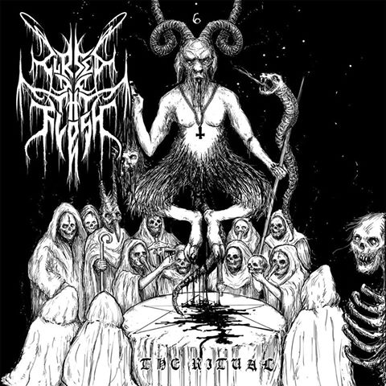

Cursed Be Thy Flesh announces their debut EP
June 27, 2019
Cursed Be Thy Flesh, a Melodic Black Metal band with members from US and Slovenia, will release their debut EP, called "The Ritual", on the July 26th. The EP contains 3 songs, one of which is already released and you can check here.
In a short interview with Nagoth, their Vocalist and Bass Player, he told us his opinions and expectations regarding their first EP.
"Being my first ever song I’ve done I think I did pretty good. I’m expecting the EP to do moderately good and would love to see it on vinyl and tape."
Seeing how their first song sounds promising, we were curious to know if the band will play live, but we quickly learned that due to members being from different countries, they are unable to meet and play toghether.
In the end, we strongly advise you to check them out. They really do a great job and we can't wait for the EP to be released.